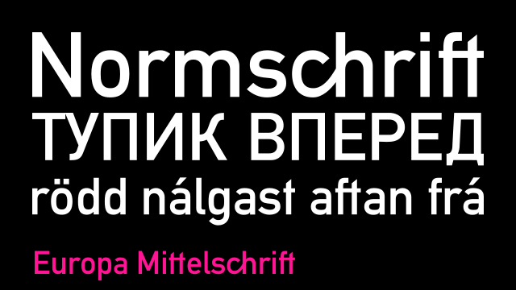

These are just the usual fonts we use for stuff. With the earliest ones appearing in the late 1800s, then used a ton in posters and ads and books and stuff. Evolving through grotesques, neo-grotesques, geometric and humanist fonts that we see everywhere now.
DIN (8)
DIN is short for "Deutsches Institut für Normung", basically the German Standards Institute. They, like the International Standards Association (ISO), set standards for whatever needs standards. Screw sizes, paper sizes, train cars and traffic signs.
Preussische VI 9 (OFL)
by Peter Wiegel
Before DIN (before Germany even), the Prussian Rail Administration (KPEV) designed a typeface to identify locomotives and platforms and other train stuffs, made to be drawn with just ruler and compass, simple but effective. This one and almost all the others on this section are made by Peter Wiegel. This is, i'm certain, the earliest one used in the 1800s, with a bunch of. weird shapes, especially the l and g, and the capital letters are a bit bigger and thicker. There's also a shadowed version!
Preussische IV 44 Ausgabe 3 (CC-BY 3.0 DE)
by Peter Wiegel
This is the second version to be made by KPEV in 1906, also made with ruler and compass in a 3x7 grid, but much rounder and nicer in my opinion. I like how simple it is, with the semicircles making some thin connections in letters like the a and h, but this font is kinda crappy in places, like the hole in the A isn't right. Though this standard was the inspiration for the DIN fonts later down the line.
Alte DIN 1451 Mittelschrift (OFL)
by Peter Wiegel
During the 1930's (which. coincided with the Nazi regime), the fonts made by KPEV were to be overhauled and made. better. and more legible. The standard that defines the font construction is DIN 1451 and, even though it is in the public domain, it costs a Lot of money to acquire from DIN media. Though people have made their own fonts based on the standard like this one! This is made primarily in a 5x7 grid. The only quibble i have is the square-ish counter shapes when it ideally should be circular. This font also has a slightly bolder version which is better if you wanna replicate an embossed look.
DIN 1451-4H (OFL)
by Peter Wiegel
This is another version of DIN 1451, here made for engraving into surfaces! It has some differences, especially the 1 and more open e. There were also rounded versions for stuff like CNC and stuff. Also this has a bunch of characters and rounded b and d counters!!!
Europa Mittelschrift (OFL)
by Peter Wiegel
DIN 1451 itself is mostly used for traffic signs in Germany, but also in other countries with different scripts. This font is a dingus DIN clone with cyrillic and greek scripts, as well as a bunch of ligatures as you can see with the ch, though you can turn them off. This is probably my favorite of the DIN fonts, the b and d counters arent as square as Alte DIN, and other stuff isnt too changed from the original standard.
TGL 0-1451 Engschrift (Freeware)
by Peter Wiegel
Most of the previous fonts have been called 'Mittelschrift' meaning "medium font". This is the other DIN font used nowadays, Engrschift or condensed, using the 3x7 grid like the old Preussische fonts! But this is a version by the TGL of East Germany. But it's obviously not the current font used nowadays, bc of the spurless b, but otherwise, it's cool!
DIN 1451 fette Breitschrift (OFL)
by Peter Wiegel
With the regular and condensed widths, there was also Breitschrift, an extended version using a 7x7 square grid! I like how the capital letters look fitting in a square. But the small letters look. weird. Not very legible, especially for traffic signs, which is why you don't really see this extended font anymore.
more to come!
↑ top of list